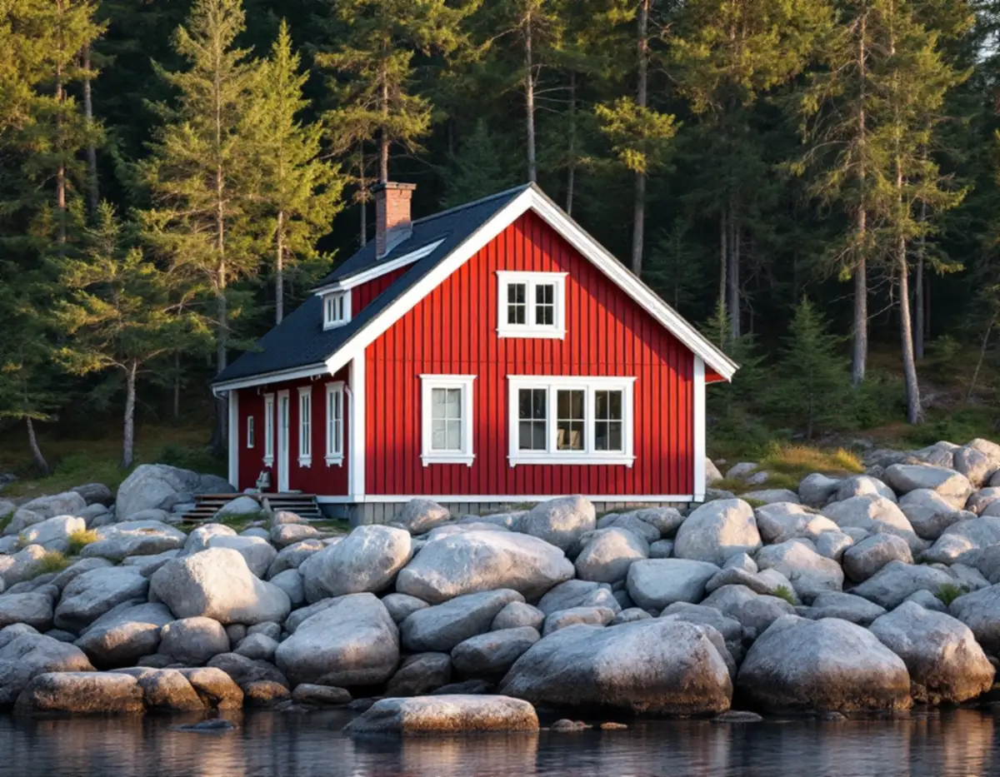
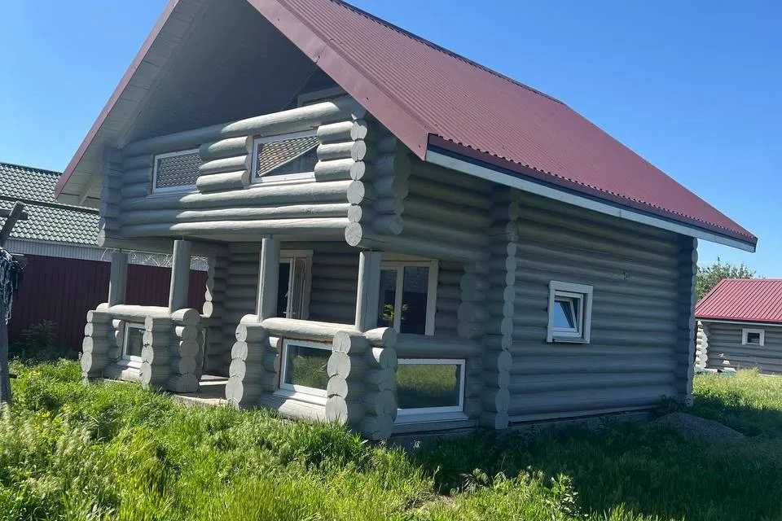

Besök på tak och vind
Vi går upp på taket och in på vinden, letar fuktspår och kontrollerar råspont och ventilation. Vi frågar också hur huset används över året.
En takrenovering i Norrtälje kan gälla ett fritidshus i skärgården lika väl som en villa i Rimbo eller Norrtälje stad. Oftast lägger vi om taket med ny underlagspapp och läkt, byter plåtdetaljer och hängrännor och ser över vinden – särskilt när ett sommarhus ska bli bostad året runt.

Norrtälje är Sveriges mest fritidshustäta kommun. SCB räknade 27 352 fritidshus år 2025, och kommunen uppger att ungefär en fjärdedel av brukarna vistas här större delen av året. Många tak byggdes alltså för sommarbruk men ska i dag klara vintrar med uppvärmt hus under sig.
Enligt SCB hade Rimbo knappt 1 700 invånare 1960 och över 5 000 år 2020. Hallstavik är ett gammalt brukssamhälle kring pappersbruket, och där ökade befolkningen från omkring 3 800 år 1960 till drygt 5 100 år 1975. I båda orterna finns därför många villor från efterkrigstiden.
Oavsett hustyp gör vi en samlad bedömning innan något river upp taket. Mer om hur vi arbetar i kommunen finns på sidan om takläggare i Norrtälje.

Ett hus byggt för juni till augusti har ofta en enkel takkonstruktion: tunn råspont, papp direkt på underlaget och liten eller ingen luftspalt. När huset värms upp hela vintern ändras förutsättningarna på vinden, och fuktig inomhusluft kan kondensera mot ett kallt yttertak.
Därför börjar vi under taket när ett permanentat fritidshus ska renoveras. Vi kontrollerar om råsponten bär, hur takfoten ventileras och om tidigare tillbyggnader har gett skarvar mellan takfall som släpper in vatten. Ofta är det rätt tillfälle att samtidigt se över isoleringen på vinden.
Ett tak som klarat fyrtio somrar kan alltså behöva mer än ny ytbeläggning. Ibland räcker en omläggning, ibland lönar det sig att jämföra med ett helt byte – se takbyte eller takrenovering.
Bland fritidshusen möter vi mest papp och plåt, medan villorna i tätorterna oftare har betongpannor eller tegel. Papp på ett lågt lutande tak torkar ut i skarvarna och vid genomföringar, och ett äldre plåttak som tappat färgskiktet får rost vid falsar och infästningar.
På pannbelagda villor från 1960- och 70-talen är det sällan pannorna som är problemet. Det är underlagspappen och läkten som tjänat ut, och då lyfts pannorna ner, underlaget görs om och de hela pannorna läggs tillbaka. Jämför materialen i tegel, betong och plåt och läs om takmaterialens livslängd.
Kommunen sträcker sig från skogsbygden kring Rimbo till öar och kustbyar mot Ålands hav, där Grisslehamn på Väddö ligger. Ett hus på en udde får betydligt mer vind och slagregn mot takfot och vindskivor än ett hus i en skogsdunge längre in.
Nära havet lägger vi extra vikt vid infästningar, nockar och korrosionsskydd på plåten. I skogen är det i stället skugga, barr och mossa som håller taket fuktigt, och där hör behandling mot mossa och rensning av hängrännor och stuprör till skötseln efteråt.
Många skärgårdsfastigheter saknar bilväg ända fram, och då behöver transporten av material och rivningsavfall planeras särskilt.
Enligt Boverket behöver ett en- eller tvåbostadshus sedan 1 december 2025 i regel inget bygglov för att byta taktäckningsmaterial eller kulör. Lov kan ändå krävas om huset eller området har skyddsbestämmelser i detaljplan eller områdesbestämmelser, om byggnaden är särskilt värdefull eller om planen har utökad lovplikt. Höjs taket kan det räknas som tillbyggnad, så stäm av med kommunen innan takets form eller höjd ändras.
Norrtälje kommun hänvisar på sin sida om lovbefriade åtgärder till kommunkartan, där du kan se om fastigheten ligger i ett särskilt värdefullt område. Kommunen bedömer inte enskilda åtgärder via e-post eller telefon; den som vill ha ett bindande besked kan söka frivilligt bygglov.
Visit Roslagen beskriver det gamla brukssamhället i Hallstavik som kulturskyddat, så kontrollera fastigheten i kommunkartan och hör av dig till kommunen innan materialet ändras. Mer om reglerna finns på bygglov vid takbyte.
Omläggningen är kärnan: täckningen tas bort, ny underlagspapp och läkt monteras och taket läggs tillbaka. Är råsponten murken byts de skadade partierna, vilket är vanligt på fritidshus där vatten länge stått vid takfoten.
Plåtdetaljerna är där läckor oftast börjar – skorstensbeslag, ränndalar, fotplåt och vindskivor. På hus med murad skorsten ser vi samtidigt över krönet, se skorstensrenovering.
Sist kommer avvattning och luftflöde. Hängrännor och stuprör byts ofta i samma etapp, och vi ser till att luften kan röra sig från takfot till nock. Så här brukar en takrenovering gå till i stort – nedan är stegen anpassade efter Norrtälje.
Vi går upp på taket och in på vinden, letar fuktspår och kontrollerar råspont och ventilation. Vi frågar också hur huset används över året.
Ett sommarhus och ett hus som ska bli permanentbostad kan behöva olika mycket. Du får ett förslag som utgår från hur du tänker bo.
Innan material väljs tittar vi i kommunkartan efter särskilt värdefulla områden och skyddsbestämmelser.
Container, ställning och leveranser planeras i förväg, särskilt vid smala grusvägar.
Taket öppnas i delar så att huset kan täckas vid regn. Underlag, läkt, plåt och avvattning görs klart innan nästa del öppnas.
Vi går igenom taket med dig, lämnar dokumentation och drar rotavdraget direkt på fakturan.
Rotavdraget gäller även fritidshus, så länge du äger huset och själv använder det. Enligt Skatteverket kan företaget dra av 30 procent av arbetskostnaden, och avdraget är högst 50 000 kronor per person och år. Rot och rut får tillsammans bli högst 75 000 kronor, och material och resor ger inget avdrag.
Äger ni sommarstället tillsammans kan ni dela på avdraget, men totalt blir det aldrig mer än 30 procent av arbetskostnaden. Ett hus som hyrs ut ger inte rätt till rot. Läs mer om rotavdrag för takarbete.
Vad en takrenovering i Norrtälje kostar beror mest på hur mycket av underlaget som måste bytas, takets storlek och lutning, antalet plåtdetaljer och hur lätt fastigheten nås. Ett fritidshus vid en smal grusväg kräver mer planering av transporter än en villa i Rimbo med egen uppfart. Läs om vad som påverkar priset och gör en första uppskattning i takkalkylatorn.
Takbyte, besiktning och plåtarbeten.
Takläggare i Norrtälje →Så fungerar en omläggning.
Takrenovering och takomläggning →Det här styr priset.
Vad kostar en takrenovering? →Räkna på takytan och ROT.
Takbyte-kalkylator →Villaområden och gårdar.
Takrenovering i Vallentuna →Näsbypark, Viggbyholm och Gribbylund.
Takrenovering i Täby →Bollstanäs, Vilunda och Runby.
Takrenovering i Upplands Väsby →